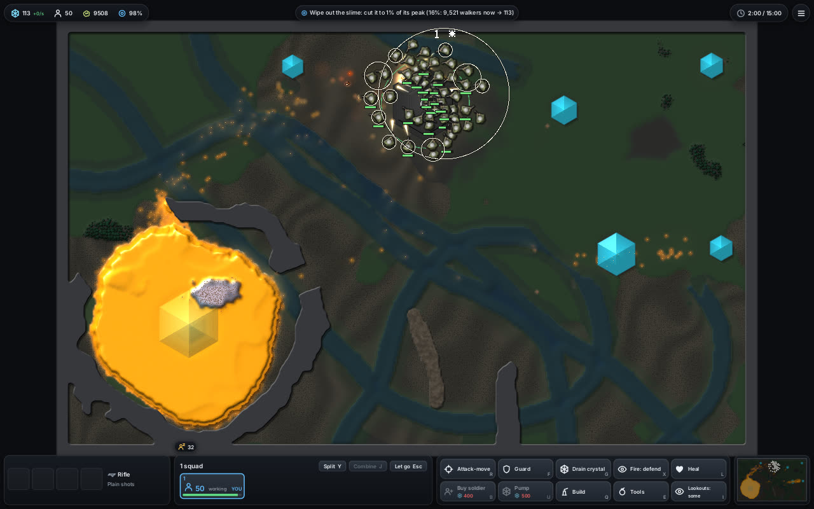

<title>Three Slimes</title>
<meta name="claude:viewport-fit-sides" content="cover">
<link rel="stylesheet" href="https://fonts.googleapis.com/css2?family=Inter:wght@400;500;600&family=Space+Grotesk:wght@500;600&display=swap">
<style>
/* Layout: one reading column; each film sits beside or above the counts that
   were read off the same game, so no picture stands without its numbers. */
:root {
  --bg: #f3f4f1;
  --panel: #ffffff;
  --ink: #1b2023;
  --muted: #58626a;
  --rule: #d4d8d6;
  --amber: #a85a12;
  --amber-soft: #f4e3cf;
  --off: #5b6f86;
  --off-soft: #e3e9f0;
  --display: "Space Grotesk", "Segoe UI", system-ui, sans-serif;
  --body: Inter, "Segoe UI", system-ui, sans-serif;
}
@media (prefers-color-scheme: dark) {
  :root:not([data-theme="light"]) {
    --bg: #14181b; --panel: #1c2226; --ink: #e7eae8; --muted: #9aa5ab; --rule: #313a40;
    --amber: #e8a04d; --amber-soft: #3a2b1a; --off: #9bb3cf; --off-soft: #232e3a;
    color-scheme: dark;
  }
}
:root[data-theme="dark"] {
  --bg: #14181b; --panel: #1c2226; --ink: #e7eae8; --muted: #9aa5ab; --rule: #313a40;
  --amber: #e8a04d; --amber-soft: #3a2b1a; --off: #9bb3cf; --off-soft: #232e3a;
  color-scheme: dark;
}
body {
  background: var(--bg); color: var(--ink);
  font: 400 16px/1.55 var(--body);
  padding-block: 40px 72px;
  padding-left: max(16px, env(safe-area-inset-left, 0px));
  padding-right: max(16px, env(safe-area-inset-right, 0px));
}
main { max-width: 1040px; margin: 0 auto; display: flex; flex-direction: column; gap: 56px; }
header { display: flex; flex-direction: column; gap: 14px; }
h1 { font: 600 2.1rem/1.15 var(--display); margin: 0; text-wrap: balance; letter-spacing: -0.01em; }
h2 { font: 600 1.4rem/1.25 var(--display); margin: 0; text-wrap: balance; }
h3 { font: 600 0.82rem/1.3 var(--body); margin: 0; text-transform: uppercase; letter-spacing: 0.07em; color: var(--muted); }
p { margin: 0; max-width: 68ch; }
.lede { font-size: 1.1rem; }
.meta { color: var(--muted); font-size: 0.9rem; }
blockquote { margin: 0; padding: 2px 0 2px 16px; border-left: 3px solid var(--rule); color: var(--muted); max-width: 68ch; }
section { display: flex; flex-direction: column; gap: 20px; }
.pair { display: grid; grid-template-columns: repeat(2, minmax(0, 1fr)); gap: 20px; }
.wide { display: grid; grid-template-columns: minmax(0, 3fr) minmax(0, 2fr); gap: 24px; align-items: start; }
@media (max-width: 760px) { .pair, .wide { grid-template-columns: minmax(0, 1fr); } }
figure { margin: 0; display: flex; flex-direction: column; gap: 10px; min-width: 0; }
figure video, figure img { width: 100%; height: auto; display: block; border-radius: 4px; background: #0d1012; }
figcaption { font-size: 0.9rem; color: var(--muted); }
figcaption b { color: var(--ink); font-weight: 600; }
.counts { min-width: 0; display: flex; flex-direction: column; gap: 10px; }
.scroll { overflow-x: auto; }
table { border-collapse: collapse; width: 100%; font-size: 0.9rem; font-variant-numeric: tabular-nums; }
th, td { text-align: right; padding: 6px 10px; border-bottom: 1px solid var(--rule); white-space: nowrap; }
th:first-child, td:first-child { text-align: left; }
thead th { font-weight: 600; color: var(--muted); font-size: 0.8rem; border-bottom-color: var(--muted); }
.tag { display: inline-block; padding: 1px 8px; border-radius: 3px; font-size: 0.78rem; font-weight: 600; white-space: nowrap; }
.tag.on { background: var(--amber-soft); color: var(--amber); }
.tag.off { background: var(--off-soft); color: var(--off); }
code { font: 0.86em ui-monospace, "SF Mono", Menlo, Consolas, monospace; }
.see { border-left: 3px solid var(--amber); padding-left: 16px; display: flex; flex-direction: column; gap: 8px; }
.see p { max-width: 72ch; }
ul { margin: 0; padding-left: 20px; display: flex; flex-direction: column; gap: 6px; max-width: 70ch; }
</style>

<main>
<header>
  <h1>What planets 1 to 3 do to you by minute 2</h1>
  <p class="lede">Planets 2 and 3 each do their own thing to a squad by two minutes in: the Sprawler hunts it from everywhere, and the Trunk walls its crystals and hardens where it is shot. Planet 1's slime eats your pumps, so a squad that builds none is left alone.</p>
  <p class="meta">2026-11-18, the Enemy lane. Run seed 1 on the software GPU, one film each, the game as it is now with the Trunk's walls and the round Lure. Two of the films use the run bot, a scripted player that drains crystals and buys soldiers and builds no pumps; planet 1's uses a script that builds two pumps.</p>
</header>

<section>
  <h2>Planet 1: the Drifter eats your pumps</h2>
  <div class="wide">
    <figure>
      <video src="planet1-pumps.mp4" autoplay muted loop playsinline controls></video>
      <figcaption><b>Zoom 6, 0:40 to 1:40, six times real speed.</b> Two pumps, the squad of four by the nearer one. The slime streams from its crystal to the near pump, and a raid leaves at 0:59 for the far one. Both are gone by 1:15, and the next raid comes for the squad.</figcaption>
    </figure>
    <div class="counts">
      <h3>The pumps' health, of 200</h3>
      <div class="scroll"><table>
        <thead><tr><th>Time</th><th>Far pump</th><th>Near pump</th></tr></thead>
        <tbody>
          <tr><td>0:40</td><td>200</td><td>144</td></tr>
          <tr><td>1:00</td><td>200</td><td>71</td></tr>
          <tr><td>1:05</td><td>189</td><td>46</td></tr>
          <tr><td>1:10</td><td>gone</td><td>14</td></tr>
          <tr><td>1:15</td><td>gone</td><td>gone</td></tr>
        </tbody>
      </table></div>
      <p class="meta">The pumps paid 1,607 food before they went. The squad was at health 98 at 1:00 and 53 at 1:40.</p>
    </div>
  </div>
  <div class="wide">
    <figure>
      
      <figcaption><b>The run bot on the same planet at 2:00.</b> No pumps, fifty soldiers, and the slime still in its bowl.</figcaption>
    </figure>
    <div class="counts">
      <h3>With no pumps, nothing happens to you</h3>
      <div class="scroll"><table>
        <thead><tr><th>Time</th><th>Soldiers</th><th>Health</th><th>Slime</th></tr></thead>
        <tbody>
          <tr><td>0:30</td><td>14</td><td>98</td><td>12,480</td></tr>
          <tr><td>1:00</td><td>26</td><td>96</td><td>11,338</td></tr>
          <tr><td>1:30</td><td>42</td><td>95</td><td>10,322</td></tr>
          <tr><td>2:00</td><td>50</td><td>93</td><td>9,508</td></tr>
        </tbody>
      </table></div>
      <p class="meta">Two raids of about 1,650 walkers (0:59, 1:35) reach the squad and are shot down. This is your own way of playing planet 1, and it is the gap: the first idea for it, the Drifter also smelling crystals you drain by hand, waits on your call about the rush (D7).</p>
    </div>
  </div>
</section>

<section>
  <h2>Planet 2: the Sprawler hunts your squad</h2>
  <div class="wide">
    <figure>
      <video src="planet2-bot.mp4" autoplay muted loop playsinline controls></video>
      <figcaption><b>Zoom 6, following the squad, 0:20 to 2:00, six times real speed.</b> The slime's fast threads find the squad wherever it goes and swarm it. It kills thousands and the slime does not shrink.</figcaption>
    </figure>
    <div class="counts">
      <h3>The run bot, by the clock</h3>
      <div class="scroll"><table>
        <thead><tr><th>Time</th><th>Soldiers</th><th>Health</th><th>Killed</th><th>Slime</th></tr></thead>
        <tbody>
          <tr><td>0:20</td><td>10</td><td>80</td><td>1,581</td><td>22,067</td></tr>
          <tr><td>0:40</td><td>11</td><td>51</td><td>4,806</td><td>21,030</td></tr>
          <tr><td>1:00</td><td>11</td><td>35</td><td>6,620</td><td>20,717</td></tr>
          <tr><td>1:30</td><td>10</td><td>41</td><td>8,657</td><td>22,098</td></tr>
          <tr><td>2:00</td><td>6</td><td>36</td><td>12,953</td><td>21,698</td></tr>
        </tbody>
      </table></div>
      <p class="meta">Raids at 0:59 and 1:40 go for the soldiers. Three are left at 2:30. The shop before planet 2 now always offers a Torch, which this bot does not buy.</p>
    </div>
  </div>
</section>

<section>
  <h2>Planet 3: the Trunk walls its crystals and hardens where shot</h2>
  <div class="wide">
    <figure>
      <video src="planet3-bot.mp4" autoplay muted loop playsinline controls></video>
      <figcaption><b>Zoom 6, following the squad, 0:30 to 2:10, six times real speed.</b> The squad drains the crystals by the landing site, then goes for the slime's second big crystal and its amber ring. The slime it shoots sets round it, and by 1:40 it is inside the ring.</figcaption>
    </figure>
    <div class="counts">
      <h3>The run bot, by the clock</h3>
      <div class="scroll"><table>
        <thead><tr><th>Time</th><th>Soldiers</th><th>Health</th><th>Set</th><th>Wall cells</th><th>Slime</th></tr></thead>
        <tbody>
          <tr><td>0:30</td><td>12</td><td>99</td><td>1,597</td><td>1,540</td><td>43,423</td></tr>
          <tr><td>1:00</td><td>15</td><td>96</td><td>1,784</td><td>1,731</td><td>43,440</td></tr>
          <tr><td>1:30</td><td>16</td><td>58</td><td>7,508</td><td>5,354</td><td>28,430</td></tr>
          <tr><td>1:45</td><td>16</td><td>61</td><td>11,851</td><td>7,211</td><td>20,701</td></tr>
          <tr><td>2:00</td><td>19</td><td>68</td><td>12,140</td><td>5,461</td><td>17,192</td></tr>
        </tbody>
      </table></div>
      <p class="meta">"Set" is slime hardened into amber: walls round the crystals it holds from 0:15, and where the squad shoots it from 1:15. A wall cell is ground a soldier cannot stand on.</p>
    </div>
  </div>
</section>

<section>
  <h2>What this says</h2>
  <ul>
    <li><b>Planets 2 and 3 do different things by minute 2:</b> one wears the squad down from everywhere, the other holds its ground and turns your fire into walls.</li>
    <li><b>Planet 1 only bites a builder.</b> A squad that drains by hand and buys soldiers meets a slime that stays home. Closing that is part of the rush question, which is yours.</li>
    <li><b>One scripted player, one seed.</b> You play differently; these show that each planet's thing happens, not how hard it is.</li>
  </ul>
</section>
</main>
